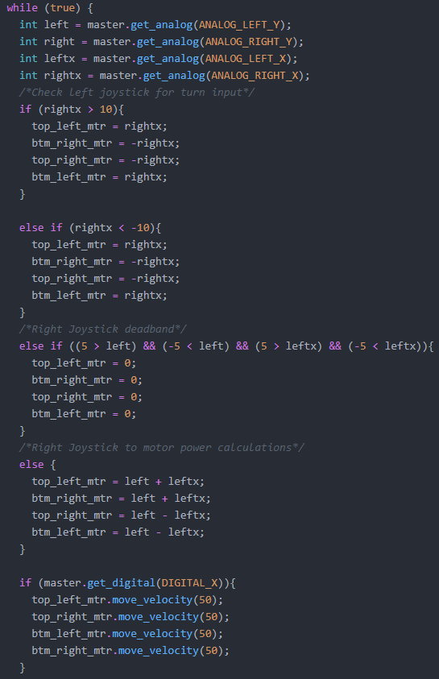
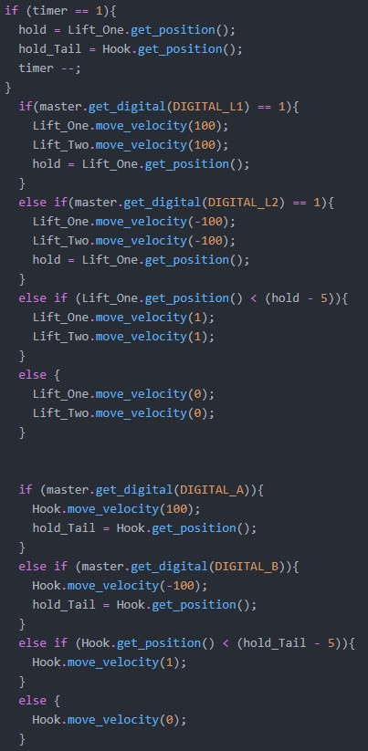

Team 3547G
Problem: Enabling the use of an X-Drive's full range of motion.
Solution:
I originally went into coding the driver controls with the idea that we were going to use a tank drive control scheme, meaning that one side of the drive base equates to a one stick on the controler. However, it was soon clear to me that this would not work due to the nature of an X-Drive so I pivoted to an arcade drive, meaning that one stick controls the X-Drive's motion forwad, backward, left, or right and the other controled turning. The Code went through a few itterations before we landed on the current code (shown below). Those versions usually failed for similar reasons being that they either did not control the robot accurately or thay fail to control the robot at all.
Problem: The lift and tail would drop the mobile goals we were carrying over time due to gravity.
Solution:
This challenge was origianlly thought to be an easier one to solve, however it became a larger issue due to the change from Cortex to V5 a few years ago. Originally in the Cortex system I would set the motors to a low power to counteract gravity. This solution was not effective in V5 for one simple reason, the motors were stronger as such even if the motors were set the minimum value of one they would still move up slightly over time. To my schock I was able to solve this on my second try, I used the C++ training I was getting from my mentor to create what I call the Anti-grav Code. What it does is each time we move our lift or tail it tracks the position of of the motor based on its encoder value. It then keeps tracking the value of the motor and it it ever drops 5 units below the set value it sets the motor to a power of one to keep it up in the air.
